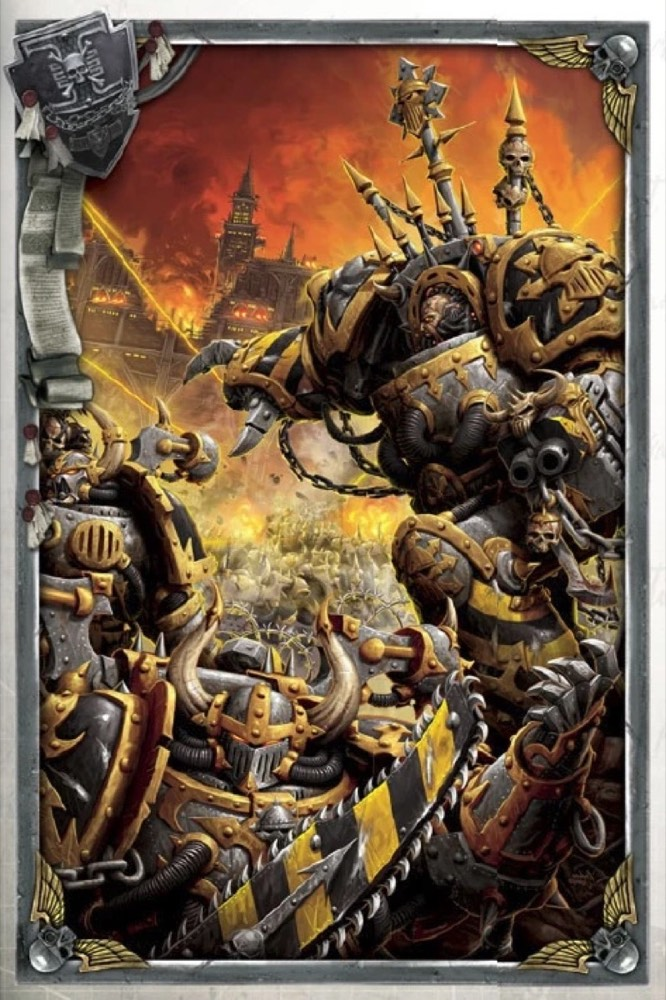

Iron Warriors
| Iron Warriors IV Legion, the Iron Lords | |
|---|---|
Badge of the Iron Warriors | |
| Founding | First Founding, c. 700.M30, in the closing years of the Unification Wars[a] |
| Legion number | IV |
| Primarch | Perturabo, the Lord of Iron (found 849.M30) |
| Present leader | Perturabo, Daemon Primarch of Chaos Undivided; Warsmiths command the Grand Companies |
| Homeworld | Olympia (quarantined as Perdita) |
| Fortress | Medrengard, a Daemon World in the Eye of Terror |
| Allegiance | Loyalist (until 005.M31); Traitor, Chaos Undivided |
| Colours | Iron grey and black, with yellow and black hazard stripes |
| Battle cry | "Iron within, iron without!" |
| Legion size | About 35,000 when Perturabo took command |
| Combat doctrine | Bombardment, fortification and the grinding assault of prepared positions |
| Notable battles | |
| Drop Site Massacre, Hydra Cordatus, Iydris, Siege of Terra, Sebastus IV, the Scouring of Olympia, the Second Siege of Hydra Cordatus, the Cadian Gate | |
| Notable members | |
| Perturabo, Forrix, Kroeger, Barban Falk, Honsou | |
The Iron Warriors are the IV Legion of the Space Marine Legions. They were raised for the Emperor of Mankind on Terra in the closing years of the Unification Wars, and under their primarch Perturabo they were, in the Great Crusade, the greatest siege army that the Imperium has fielded. In the course of the Crusade, mistreated and unthanked, they came to share the bitterness of their primarch, and in 005.M31 they followed Horus into rebellion. Their part in the Horus Heresy was that of a siege-breaker: they broke the walls of the loyalists' fortresses at Hydra Cordatus and at Terra, and in the Drop Site Massacre they destroyed the Salamanders' position with an atomic strike.[1][2]
After the Heresy the Legion withdrew into the Eye of Terror and made the Daemon World of Medrengard its fortress. Unlike most of the Traitor Legions, it did not break into warring bands. Its Warsmiths, the officers who command its Grand Companies, are rivals, but they share a doctrine and a discipline that have kept the Legion, with its auxiliaries of renegades and slaves, a coherent force for ten thousand years. Their principal enemy is the Imperial Fists, whom they hate for the sake of Perturabo's old feud with Rogal Dorn.[2][3]
In the Era Indomitus the Legion returned to the war of the galaxy with a plan that its primarch had made over millennia. After the fall of Cadia, Perturabo launched what the Imperium's analysts call the Infinite Citadel, a campaign of siege on the scale of whole sectors, in which fortress-worlds are built, linked and extended towards Terra. It is the best-organised offensive of the Traitor Legions since the Heresy, and the first in which a Daemon Primarch has taken the field himself in many millennia.[4]
Legion era
[edit]Origins
[edit]The IV Legion was founded on Terra at the end of the Unification Wars, on the wreckage of a ruined fortress-city that was later taken as the Legion's first mustering ground. Its recruits were drawn from the gun-tribes, blood-grieves and Tek-enclaves of the surrounding lands. Its gene-seed was unusually adaptable, and the rate of rejection in its implants was lower than that of any other Legion, so it grew rapidly and was one of the first of its brothers to be used in force. It fought on Terra and in the pacification of the Sol System in 798–803.M30, and its Legionaries are honoured in the Palace's frescoes at the Cydo-Tyre Orbital, the Zidex Archipelago and Mehr Yasht, the last the decisive battle of the Venusian campaign, where the Emperor himself led the Legion's "serried ranks and steel banners" against the armies of the Litho-Gholem.[1]
As the Crusade went out of the Solar Segmentum, the IV Legion was one of the most numerous of its Legions. It formed the leading part of the 8th Expeditionary Fleet, which in eleven standard years conquered or reclaimed twenty-nine system-clusters and destroyed several xenos realms. The Legion took the Winged Bolt, the emblem of that fleet, as its first heraldic device. It lost its connection to Terra in these years and filled its ranks from worlds far from the Throneworld, with the result that when its primarch was found it was a force that had developed without him, under officers who had no idea what he would require.[1]
Perturabo and the decimation
[edit]Perturabo, the primarch of the IV Legion, was found on Olympia in 849.M30, a world of warring city-states where he had been raised as the protege of the Tyrant of Lochos. After a short period in the Emperor's company on Terra he took command of the Legion and renamed it the Iron Warriors. He found about thirty-five thousand Legionaries, with garrisons across the Imperium, and reviewed its record, its doctrine and its practice, compared them with those of the other Legions, and found them wanting. His answer was decimation. One Legionary in ten, chosen by lot, was put to death without honour by the hands of his own comrades. The edict, which has been preserved, declared that war is blind to the deserving and that those who died would die blindly in the name of the greater failure of the Legion's record.[1][5]
Some at the Imperial Court protested that a madman had been given absolute power over a Legion. Chief among them was Roboute Guilliman of the Ultramarines, who had fought beside the IV Legion and was offended at the manner of its Legionaries' deaths. The quarrel was later eclipsed by others, but it was among the many that divided the primarchs. For the Iron Warriors the lesson was plain. Their primarch would tolerate no failure, would not reward them and would regard the Crusade as a duty. He did not ask them to love him, and they did not.[1]
The Great Crusade
[edit]Perturabo made the IV Legion into the peerless siege army that he had demanded. It worked with an iron method: prolonged bombardment by every weapon the Legion could bring, field fortification that held the enemy with the fewest possible troops, and an assault at the end of the preparation, delivered by troops who had been rested while others were dying. The Iron Warriors accepted attrition. They are estimated to have suffered the highest casualties of any Legion in the Crusade, and they absorbed them without any lasting loss of strength, replacing the dead from the worlds they conquered. They were the maul of the Crusade.[1][3]
They were not thanked. The Legion was given the Crusade's hardest and least glamorous tasks, and the glory went to the Legions that came after it. Perturabo's own conquests were innumerable and unremarked. He left shattered worlds behind him, and the Legion took on the character of its primarch: suspicion, distrust of others and callous indifference to life, together with an iron determination. His feud with Rogal Dorn of the Imperial Fists, with whom he shared a gift for siegecraft and a reserve, was bitter. Dorn was an idealist who paid heavy prices only when he had to. Perturabo regarded such prices as the ordinary cost of victory.[5]
In the final years of the Crusade, in 004.M31, the Legion's homeworld, Olympia, rebelled. Imperial accounts of the rebellion are scant, but by most the Iron Warriors suppressed it with a campaign that ended in the destruction of the world's population. The Legion was scattered over the stars in a hundred small deployments when the Warmaster's message reached it.[5][2]
Horus Heresy
[edit]
Isstvan V
[edit]The IV Legion came to the Isstvan System after the pacification of Olympia, and Perturabo met the Warmaster's allies in the flagship of the Word Bearers before the battle. At the Drop Site Massacre in 006.M31 the Iron Warriors formed part of the second wave that turned on the loyalists. Their ships destroyed the loyalist drop-ships and, on the Warmaster's order, loosed the atomic strike on the Salamanders' position that killed most of the loyalist Legion of Vulkan. The Iron Hands' hammer, Forgebreaker, which Fulgrim had taken from the dead Ferrus Manus, was given to Perturabo as a token of his new allegiance. The Iron Warriors also built, at the Night Lords' request, a maze for the captive Vulkan aboard the gaol-hulk Nightfall.[2][5]
Hydra Cordatus
[edit]Horus ordered Perturabo to destroy the Imperial Fists. The Iron Warriors struck in 007.M31 at Hydra Cordatus, a world lately brought into the Imperium by Dorn's Legion, and bombarded the valley that held the Cadmean Citadel while leaving the citadel itself untouched, to show the Imperial Fists that they could. The garrison, which included a number of the Imperial Fists' Legionaries, held for nearly three months. When the walls broke Perturabo led the last assault himself and killed more than thirty Imperial Fists in a few minutes. The survivors and the refugees were slaughtered or enslaved, and the planet was reduced to a desert.[2][5]
Angel Exterminatus
[edit]Later in 007.M31, after Hydra Cordatus, Fulgrim arrived to say that he had something to show his brother. The Iron Warriors followed the Emperor's Children's fleet into the Eye of Terror, guided by an Aeldari seer, to the Crone World of Iydris. Perturabo, who distrusted any objective that was left undefended, dug in behind layers of fortification to protect his line of retreat, and went into the citadel of Amon ny-shak Kaelis at Fulgrim's side. He had come prepared to turn the rite that he expected against the Phoenician, and he carried the maugetar stone for that purpose, but Fulgrim threw him aside and gave himself to Slaanesh. Perturabo cast the stone into the shaft, and in the confusion the loyalists of the Sisypheum broke into the chamber. He left the Eye having lost the last of his brothers whom he had counted a friend. The Iron Warriors, like the rest of the Warmaster's host, now served the Ruinous Powers in full.[2][5]
The Siege of Terra
[edit]One part of the Legion held Olympia and its neighbouring systems as an Empire of Iron, while another went to Terra under its primarch. At the Siege of Terra in 014.M31 Perturabo was the Warmaster's siege-breaker, and the Legion's guns opened the long and murderous assault on the outer defences. Opposite Perturabo stood Dorn, and the siege became a duel between two gifted engineers of siegecraft, one who held and one who broke. The Iron Warriors took the outer works at a terrible cost to both sides and still could not carry the Inner Palace. The Emperor killed Horus before the question was resolved.[2][5]
The Long War
[edit]The Iron Cage
[edit]The Iron Warriors fled into the Eye of Terror with the rest of the Warmaster's army. Perturabo's first act of revenge was against the Imperial Fists. Dorn had declared that he would dig his brother out of his hole and bring him to Terra in an iron cage, and in c. 021.M31[a] he sent four companies of his Legion to the Eternal Fortress that Perturabo had built at Sebastus IV, an enormous complex of bunkers, minefields, trenches and tank traps in the shape of the eight-pointed star of Chaos. The fortress was a decoy, with no keep at its centre but an open killing ground, and the Imperial Fists, cut off from their orbital support and divided, were destroyed piecemeal in six days.[5][3]
Medrengard and the Scouring of Olympia
[edit]Perturabo became a Daemon Primarch of Chaos Undivided, in the favour of all the powers instead of one, and the majority of the Legion followed him to the Daemon World of Medrengard. The warriors who had remained in Olympia could not retire, and they prepared for the vengeance of the loyalist Legions. It came in the Great Scouring. The Imperial Fists supported the Ultramarines in a campaign to liberate the subject worlds, and the Imperial Fists, in a reversal of fortune, took part in the sieges of the Iron Warriors' strongholds, which lasted for a decade, c. 014–024.M31,[a] before the Traitors were dislodged. Olympia was left a blasted wasteland, quarantined by the Imperium and listed by the Inquisition as Perdita. It is not mentioned again in the Imperium's records.[2][3]
The Iron Warriors of the Eye built a fortress on Medrengard that is a prison, a forge and a school of war. Its people are slaves, bred and used up in the Legion's forges. Its Warsmiths are the lords of the Legion's Grand Companies, and in the Imperial view they are cold and exact tyrants who work in the Legion's interest and who destroy anyone who threatens it. The Legion also took the renegades and pirates of the Eye as auxiliaries, and took the war to the Imperium at the Cadian Gate in several of the Black Crusades, always with a carefully-chosen target.[3][2]
The one problem that the Legion could not solve was that of replacement. The corrupting power of Chaos spoils the gene-seed of the Iron Warriors, and in time it became unusable for the making of new Legionaries. The Legion survived by raiding for the gene-seed of its enemies, and especially by taking that of the Imperial Fists, with whose genetic stock its own can be spliced.[3]
The Second Siege of Hydra Cordatus
[edit]In 999.M41, in the 13th Black Crusade, the Iron Warriors under Warsmith Barban Falk attacked the Forge World of Hydra Cordatus for the second time. The Mechanicum kept a store of Space Marine gene-seed there, including that of the Imperial Fists, behind the walls of the Tor Christo. Three of Falk's champions, Forrix of the 1st Grand Company, Kroeger of the 2nd and Honsou, besieged the citadel, which had a garrison of the Astra Militarum, a detachment of Titans of the Legio Ignatum and, at the last, an Imperial Fists company. The Iron Warriors took the vaults. Falk had pleased the gods, and before he ascended as a Daemon Prince he named Honsou, a warrior of mixed gene-seed whom his peers called a half-breed, as his successor.[3][4]
Honsou then fought and defeated Forrix and Kroeger in a war between the Warsmiths, and rebuilt his force from the renegades of the Eye. He joined the Skull Harvest at New Badab, a contest between Chaos champions hosted by the tyrant of the Red Corsairs, and left it with some seventeen thousand warriors. His revenge was against the Ultramarines. He destroyed the world of Tarsis Ultra, where Uriel Ventris had fought the Tyranids, and launched the Iron Warriors' invasion of Ultramar. It was driven off by the Ultramarines, but it was not the last attack on Ultramar by the Legion.[3][4]
Era Indomitus
[edit]
After Cadia fell in 999.M41, the Great Rift opened across the galaxy and the Noctis Aeterna darkened the Imperium. Perturabo sent scores of Iron Warriors warbands across the Segmentum Obscurus. Some were no more than pirates, cultists and Traitor Guardsmen who died in the course of their tasks. Others were Grand Companies with Chaos Knights and Traitor Titans. The Imperium took these attacks for spite against the Cadians' retreat. They were, the Inquisition now believes, the first moves in a plan that Perturabo had devised over ten thousand years.[4]
The Infinite Citadel is a siege on a galactic scale. Perturabo regards the Imperium as a single fortress that extends across the stars. The breaching of the Cadian Gate in the 13th Black Crusade was the first crack in its wall, and the Great Rift was a defensive work that cut off half of it. The Iron Warriors' task is to build a ring of fortresses, in the form of entire worlds stripped of resources and rebuilt as brutalist strongholds, and to advance it system by system towards Terra. Where the Imperium resists, the Iron Warriors dig in and make the defenders come to them. The blood spilled on both sides, Perturabo intends, will feed the Dark Gods until the Warp is so close to the real that the Daemon Primarch can walk on Imperial soil at will and kill the Emperor in person. The first assaults were on the Imperial bastions that remained in the Cadian Gate, and an Imperial strategic chart of the region lists the Toros and Belis Corona systems as besieged by the Iron Warriors.[4]
The campaign marks the return of Perturabo himself to the battlefield. Imperial reports describe him as a monstrous being, but the Inquisition holds that his main weapon is still his mind, which has spent millennia in the towers of Medrengard.[4]
Organisation
[edit]Before the Heresy the Legion was organised in the usual way for a First Founding Legion, in companies led by captains and in larger formations under Legion officers, but it took its character from the specialist roles that its doctrine demanded: Breachers and Siege Masters, heavy-armoured squads that carried the fighting into the breach, and an unusually large complement of artillery, siege engines and engineers. Each Legion's detachment carried its own fortifications.[1]
The Legion today is organised in Grand Companies, each led by a Warsmith who holds the rank by right of conquest. The Warsmiths are rivals, and the elimination of one by another is not discouraged, but they are held together by the discipline that Perturabo imposed. A Grand Company commonly includes the Legion's Chaos Space Marines, large formations of renegade troops, Traitor Guardsmen and slaves, the Legion's armour, and a force of daemon engines, such as Defilers, Maulerfiends and Forgefiends, as well as Obliterators, the warriors who have been fused with the weapons they carry by the corruption of Chaos.[3]
| Name | Role |
|---|---|
| Warsmith | Commander of a Grand Company; the Legion's equivalent of a captain-general |
| Grand Company | The principal formation of the Legion; a field army of Space Marines and auxiliaries |
| Siege Master | Officer who plans and directs the assault on a fortification |
| Breacher | Heavily armoured Legionaries who storm the breach |
| Obliterator | Warrior fused with his weapons by the power of Chaos |
Beliefs and combat doctrine
[edit]The Iron Warriors hold that war is mathematics. They begin an attack with a bombardment, using every weapon that can be brought to bear, in a fire plan that directs each shot to the target where it will do most. They coordinate with Traitor Titans where they can. When the bombardment cannot force a surrender, a landing force follows in waves: first the atmospheric craft that saturate the landing zones, then heavy transports that bring prefabricated fortifications and construction crews, and last the troop transports and drop pods. Only when the ground has been fortified and the enemy ground down will the Legion's troops go forward, and they do so as a storming force, with armour in front, to the breach that their guns have opened.[3]
The same doctrine governs defence. The Iron Warriors use fortification to occupy the largest number of the enemy with the fewest troops, so that the bulk of their warriors can be saved for the assault. Their belief is the corollary: that only the planned and the prepared are secure. They are the most disciplined of the Traitors, the most cold of the Chaos Legions and the least given to Chaos's self-indulgence, and they hold their gods to be tools. In battle they chant "Iron within, iron without", a call to which their comrades answer, and which the Legion uses to identify its own in the dark.[3][5]
Gene-seed
[edit]The gene-seed of the Iron Warriors was once the most adaptable of any Legion, with a low rate of rejection in its implants. Its present condition is the reverse. The corruption of Chaos has mutated it past the point at which it will take in a new recruit, and the Legion has to replenish itself from stolen gene-seed, from the Imperial Fists, from the Mechanicum's stores and from its own captured warriors.[3][6]
Heraldry
[edit]The Legion's first emblem was the Winged Bolt, which it took from the 8th Expeditionary Fleet. In the Imperium's heraldic rolls its later badge is an iron skull marked with a downward arrow, and its colours are iron grey and black, with yellow and black hazard stripes on its armour. A Legionary's armour carries the battle honours of the Legion's sieges, in the manner of the Great Crusade's banners.[7]
Notable members
[edit]| Name | Era | Notes |
|---|---|---|
| Perturabo | Legion and Era Indomitus | Primarch; Daemon Primarch of Chaos Undivided |
| Forrix | M41 | Captain of the 1st Grand Company |
| Kroeger | M41 | Captain of the 2nd Grand Company |
| Barban Falk | 999.M41 | Warsmith; led the Second Siege of Hydra Cordatus; became a Daemon Prince |
| Honsou | 999.M41 | Warsmith of mixed gene-seed; led the invasion of Ultramar |
Timeline
[edit]| Date | Event |
|---|---|
| c. 700.M30 | The IV Legion is raised on Terra in the First Founding.[a] |
| 798–803.M30 | The Legion fights in the pacification of the Sol System, including the Venusian campaign. |
| c. 800s.M30 | The 8th Expeditionary Fleet conquers twenty-nine system-clusters; the Winged Bolt becomes the Legion's device.[a] |
| 849.M30 | Perturabo is found on Olympia, renames the Legion the Iron Warriors and orders the decimation. |
| 004.M31 | Rebellion and destruction of Olympia. |
| 006.M31 | The Drop Site Massacre at Isstvan V; Perturabo receives Forgebreaker. |
| 007.M31 | First Siege of Hydra Cordatus; Iydris and the fall of Fulgrim. |
| 010–012.M31 | The Battle of Tallarn. |
| 014.M31 | The Siege of Terra; the Legion takes the Palace's outer works. |
| c. 014–024.M31 | The Scouring of Olympia in the Great Scouring.[a] |
| c. 021.M31 | The Iron Cage at Sebastus IV destroys four companies of the Imperial Fists.[a] |
| M31 | Perturabo ascends as a Daemon Primarch; the Legion settles on Medrengard in the Eye of Terror. |
| 999.M41 | Second Siege of Hydra Cordatus in the Thirteenth Black Crusade; Honsou succeeds Barban Falk. |
| Early M42 | The Infinite Citadel campaign begins in the Cadian Gate and the Segmentum Obscurus. |
See also
[edit]Notes
[edit]References
[edit]- ^ a b c d e f g Liber Primarchus (M32, revised M41). Administratum Archive, Terra.
- ^ a b c d e f g h i Chronicles of the Heresy (sealed). Logos Historica Verita, Terra.
- ^ a b c d e f g h i j k l Lexicanum Martialis. Officio Militaris.
- ^ a b c d e f Records of the Indomitus Crusade (ongoing). Office of the Lord Commander.
- ^ a b c d e f g h i Siege Annals of the Iron Warriors (captured, rev. M32). Ordo Astartes, Terra.
- ^ Codex Imperialis (rev. 980.M41). Adeptus Terra.
- ^ Insignium Astartes (rev. M41). Ordo Astartes, Terra.